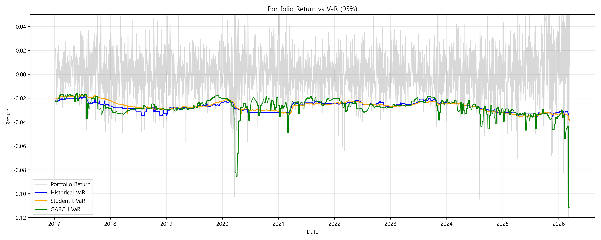
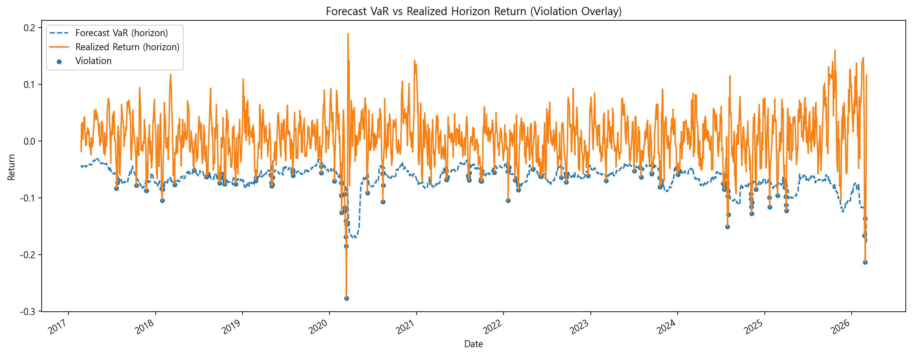

Korean Semiconductor Portfolio Risk Analysis
Python · Risk · Finance한국 반도체 3개 기업 포트폴리오를 대상으로 시장 리스크를 정량적으로 분석한 프로젝트입니다. VaR, CVaR, GARCH, Kupiec Backtest를 활용해 변동성 국면과 tail risk를 평가했습니다.
- Problem: 반도체 포트폴리오의 하방 리스크와 변동성 구조를 정량적으로 측정
- Method: Historical VaR, Student-t VaR, CVaR, GARCH Volatility, Kupiec Backtest, Stress Testing
- Result: VaR 95% ≈ -2.78%, CVaR 95% ≈ -4.19%로 최악 구간 손실 위험이 확대됨을 확인
- Insight: 2020년 및 최근 고변동성 구간에서 violation이 군집적으로 발생해 stress regime에서 더 보수적인 리스크 관리가 필요
- Tech Stack: Python, Pandas, NumPy, Matplotlib, ARCH, Financial Time Series

